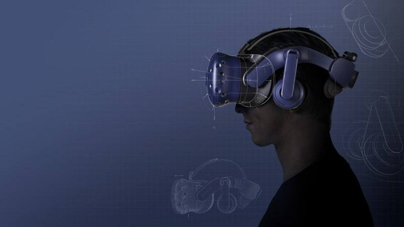

Learn more about Computer Science
Why you should be a Computer Science Major
Computers are becoming necessary for nearly every industry, expanding the properties of existing ones, and creating new ones.
Computers have been used and added to existing jobs for data management, replacing the large file cabinets full of paper.
They open new worlds of possibilities for communication, allowing near instantaneous communication amongst a network of computers.
They have created a whole new industry in the terms of entertainment, allowing users to explore, fight, drive, learn, and anything else that can be imagined.
Computers have opened a new, massive world of endless virtual possibility.

Unlike our physical world, which most engineers and other students work with, the digital world of computers has very few limits.
The most physical limit is hardware, these are the parts of a computer that you can buy at a store. The different processors, graphics cards, RAM sticks,
hard drives, they are necessary for a computer to run. But I prefer to think of this less as a limit, and more as a potential for your abilities to reach.
The other limit is yourself. The more you know about Computer Science, the more you can make full usage of this potential. The good news here, is
you can learn all the necessary tools and abilities by majoring in Computer Science. In little time, you can be navigating this vast virtual world with ease.
Other reasons?
Cause we're the best, obivously.